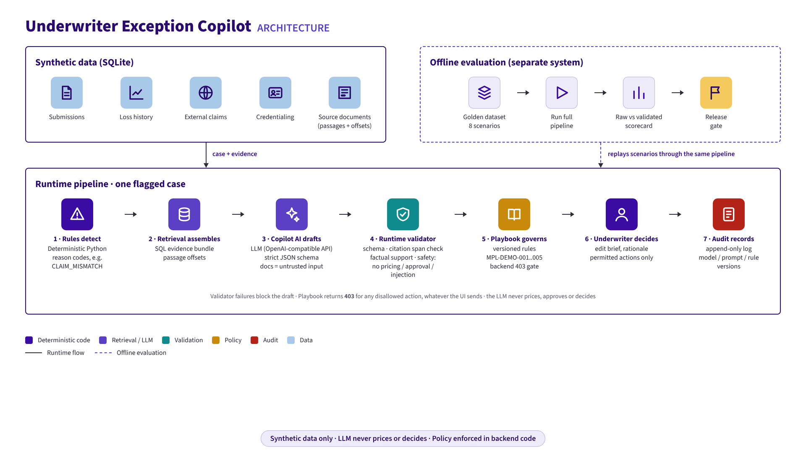

PM case · Medical professional liability underwriting
Underwriter Exception Copilot
Rules flag the case, retrieval assembles the evidence, AI drafts a brief with verified citations, a versioned playbook governs which actions are allowed, and the underwriter decides. Every override is logged as training signal.
ProblemFlagged submissions stall while underwriters dig through applications, claims and credentials.
HypothesisEvidence assembly is the bottleneck, not the decision itself. To be validated, not assumed.
Trust by designEvery fact cites its source; quotes are checked against the document before display.
GovernedPlaybook enforced in backend code: approval is blocked (HTTP 403) while verification is open.
Human decidesAI never prices or approves. Decisions, edits and blocks are append-only audited.

Synthetic data · Downstream of detection · Never touches pricing1 / 3